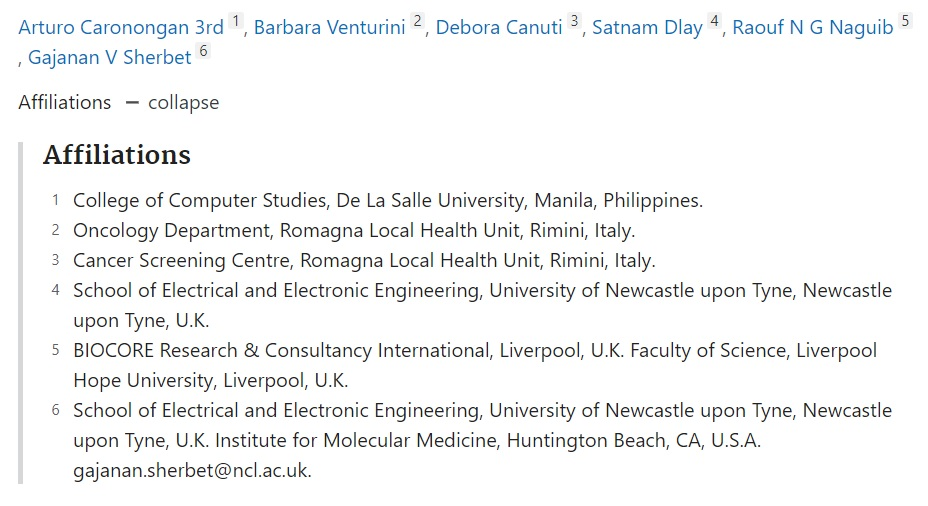

My Publications
In this page, you will find a collection of my most memorable publications. I will feature the ones I am most proud of, particularly publications about my research interests in Game Development, Health Informatics, Machine Learning, and Data Science over here. I will also give an in depth explanation on what the said publications are and why I find them the most memorable ones.
For each entry, feel free to click on the title to direct you to a page where you can have a look at the corresponding publication. For other publications not listed here, you may check out my LinkedIn or Google Scholar page.
The Development of Intelligent Patient-Centric Systems for Health Care (2018)
A Caronongan, H Gorgui-Naguib, RNG Naguib
Discipline: Health Informatics, Artificial Intelligence
Type: Book Chapter
Published in: Theories to Inform Superior Health Informatics Research and Practice, 355-373, Springer Publishing
Description: This publication talked about the different algorithms and approaches used in developing modules targetting patient-centric healthcare approaches, such as treatments for cardiovascular disease, EEG analysis, and disease diagnosis. The different challenges brought upon by each approaches are also discussed, as well as shedding light into possible approaches to address these challenges through different approaches in the field of Machine Learning, Image Processing, and other techniques involving Artificial Intelligence.
Why it's special: Any publication related to healthcare is special for me. If I wasn't afraid of blood, I'd probably be taking up medicine, so being able to use my computing skills to help out in the healthcare industry will always be special in my books. Also, co-authoring this with the founder of BIOCORE, a work partner of WHO (World Health Organization), means I was trusted with a responsibility to take on an important task that will be important in the healthcare industry.
Neural Analyses Validate and Emphasize the Role of Progesterone Receptor in Breast Cancer Progression and Prognosis (2016)
Caronongan A III, Venturini B, Canuti D, Dlay S, Naguib RN, Sherbet GV
Discipline: Health Informatics, Data Science, Neural Networks
Type: Journal Paper
Published in: Anticancer Res. 2016;36(4):1909‐1915.
Description: Using robust multilayer perceptron artificial neural networks, progesterone receptor was deemed to have a higher correlation than estrogen with regards to breast cancer survival and prognosis. Likewise, receptor determinations in immunohistochemical (IHC) and radioactive ligand binding assays (LBA) were analyzed and the correlation of progesterone was observed in both, with a higher emphasis being found from the IHC approach.
Why it's special: Again, a publication about healthcare, but it is about anticancer research. Having lost a family member and some people I know to this deadly disease, being able to contribute anything to healthcare workers to battle the big C is something I would continue working for. Also, this publication made me exercise all my knowledge about data science and data analysis to come up with the findings indicated in the paper.
Just so you know, these amazing individuals were my co-authors, and I was given the tall order of providing the data anlysis of the data obtained.

That image should pretty much speak for itself. In the end, as long as hard work can result to at least one life saved, it was all worth it! This was also my first Journal Publication involving healthcare, so this will always hold a special place in my list of publications.
Modeling User Music Preference through Usage Scoring and User Listening Behavior for Generating Preferred Playlists (2015)
Caronongan A.P., Cabredo R.A.
Discipline: Machine Learning, User Modeling, Recommendation Systems
Type: Conference Paper
Published in: Principles and Practice of Multi-Agent Systems. CMNA 2015, IWEC 2015, IWEC 2014. Lecture Notes in Computer Science, vol 9935. Springer, Cham
Description: The study considered a more personalized view and examined to which degree a user's music preference can be gathered with respect to their listening behavior that is tracked through a music player developed. An approach to model a user's music preference was proposed, which involved using a series of usage scores obtained from the said behavior. A playlist was derived from the model to match the user's listening behavior, and the model included an approach to accommodate changes to the user's listening behavior.
Why it's special: There are many reasons why this is special. First, it was my MS in Computer Science deliverable, and I used a lot of Java and C++ to program the modules required, from developing the music player to performing machine learning and data analysis. The second reason was that it got rejected quite a number of times in other conferences before finally being accepted with the changes made from previous comments that came with the rejections. This was my first (and definitely won't be my last) paper that receieved a rejection after I felt that I put a lot of hard work and dedication towards making a publication, so you can tell I felt devastated after. Nonetheless, it was from this publication where I learned to change my mindset with regards to submitting manuscripts and getting rejections.
It's pretty much inevitable that I will be receiving more rejections in the future, but I now have a different mindset when it comes to rejections, and I have this paper to thank for that. In the end, seeing a paper that's been rejected and improved finally being published does make that one "Yes" after a series of "Nos" all the more sweeter.
Classical Music Time Period Classification Using Machine Learning Algorithms (2011)
Caronongan A., Choi, K.
Discipline: Machine Learning, Music Information Retrieval
Type: Conference Paper
Published in: Philippine Computing Science Congress, 2011
Description: Using a combination of Music Information Retrieval and Machine Learning algorithms, classical music in the form of MIDI files were classified according to whether they were composed from the Baroque Era, Classical Era, Romantic Era, and Impressionism Era respectively. Further analysis was done to identify the most relevant features that played a role in terms of sound / structure in determining what Era the particular piece was most likely composed in.
Why it's special: This was my final deliverable in one of my classes and it made me appreciate Machine Learning which I've grown quite fond of with regards to problem solving. This was also the first conference publication that required me to present outside my comfort zone, and opened me to the world of presenting my research findings to a wider audience, so it was pretty memorable.
AI Shipyard: Finite State Machine AI Engine for Ai Cap’n (2010)
Caronongan A., Benavidez K., Gotauco P., Chua K.
Discipline: Game Development, Intelligent Agents, AI Visualization Tool
Type: Thesis Paper
Description: This study involved the development of an Agent Visualization Tool for creating Intelligent Agents for the game AI Cap'n (A wordplay for "Aye Captain!"), which involved bots being pitted against each other in a deathmatch. Bots made use of pathfinding and heuristic decision making in making decisions with regards to actions they will perform. AIShipyard enabled the development of these bots through a non-programming environment while representing their decisions in the form of a Finite State Machine (FSM). Users are then provided with a module that will allow them to have a visualization of their produced agent and corresponding state in the FSM during a real-time debugging environment.
Why it's special: Aside from being my Undergraduate Thesis deliverable, this project basically marked a true beginning to my journey into Computing and Computer Science. During my undergrad, I was a competitive programmer (still one until now in the form of a coach), so I put a lot of the skills I learned from competitive programming into developing modules for the application. The deliverable ended up being used by future batches of students who took up Intelligent Systems, so it was nice to see our project used to aid in learning about concepts from Artificial Intelligence.